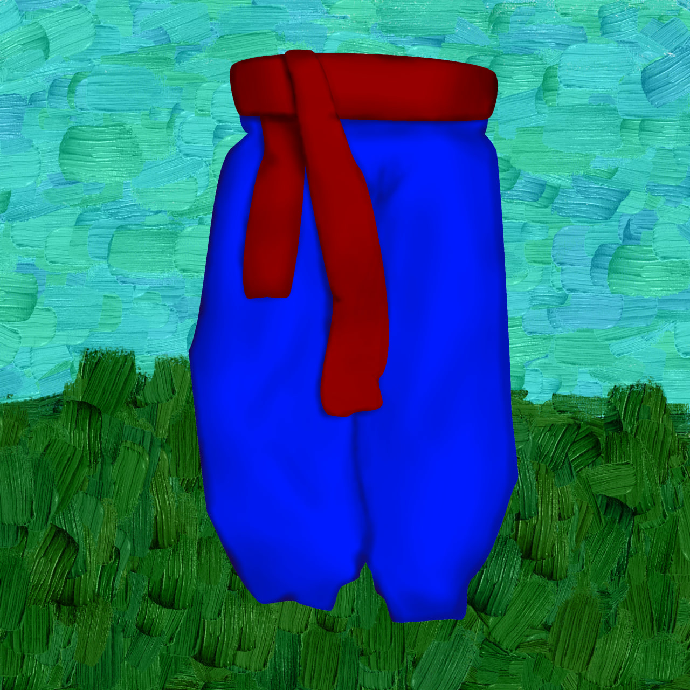
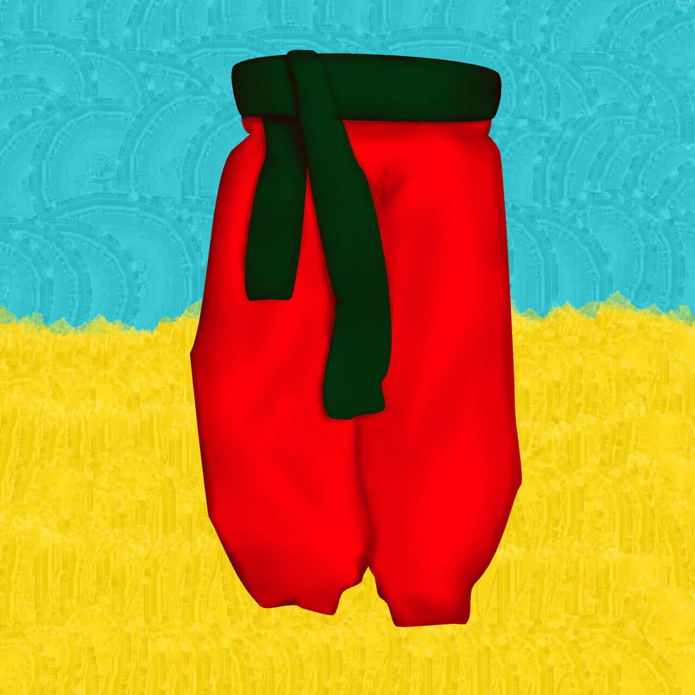

Львів
У Львові найпоширенішими були сині шаровари. Пояс же був червоним, тому що це відповідало формі реєстрових козаків, що працювали на Польщу. Інколи додавали зелені кольори.
 Такі шаровари були не дуже довго поширеними, адже, здебільшого, шаровари були розповсюджені на сході України. Зараз у Львові переважає стереотип, що у тій місцевості були поширені червоні шаровари з червоним поясом, однак це не так.